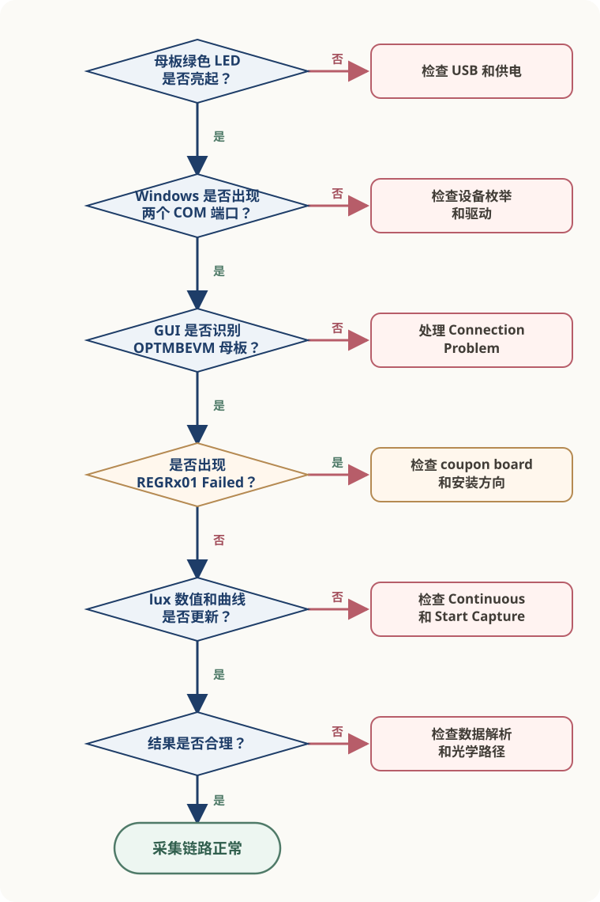
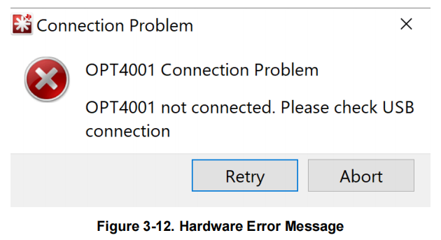
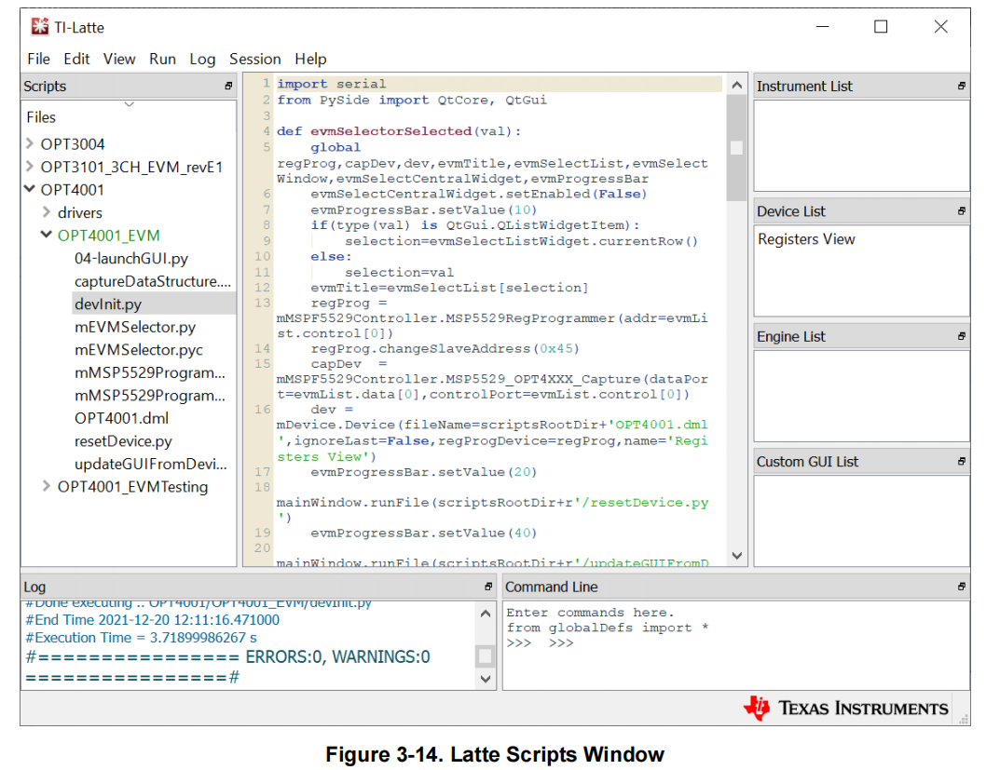

故障排查
OPT4001YMNEVM 的首次采集依赖电脑、USB、OPTMBEVM 母板、 coupon board、OPT4001YMN 和 EVM GUI 共同工作。
出现异常时，先根据可观察到的现象判断问题停在哪一层，再检查对应的连接、 配置或数据处理过程。
验证状态
本页根据 TI 《OPT4001YMNEVM User's Guide》和 《OPT4001 Datasheet》整理。
官方文档明确给出的错误现象和检查步骤在正文中单独说明。 自定义主控、数据解析和光学路径中的补充检查根据系统结构整理， 尚未在 OPT4001YMNEVM 实物上复现。
排查路径
按照以下顺序定位问题：
母板绿色 LED 是否亮起
→ Windows 是否出现两个 COM 端口
→ GUI 是否识别母板
→ coupon board 是否能够被读取
→ lux 数值和曲线是否更新
→ 数据解析是否正确
→ 光学路径是否正常
OPT4001YMNEVM 故障排查路径

图 1：OPT4001YMNEVM 故障排查路径。该图根据系统结构和官方错误说明整理，不表示实际硬件走线。
下面的检查分为两部分：
- 使用官方 OPT4001 EVM GUI 时，进入“官方 EVM GUI”；
- 使用 MCU 或其他控制器直接访问器件时，进入“自定义主控”。
官方 EVM GUI
母板未上电
现象
将评估板连接到电脑后，OPTMBEVM 母板上的绿色 LED 没有亮起。
检查
- USB-C 接头是否完全插入 OPTMBEVM；
- USB-A 接头是否完全插入电脑；
- 当前 USB 端口是否能够正常供电；
- 更换 USB 端口或线缆后，现象是否改变。
绿色 LED 用于确认母板已经通过 USB 获得供电。LED 未亮起时， 暂时不要继续检查 GUI、寄存器或传感器配置。
恢复标准
重新连接后：
- 母板绿色 LED 亮起；
- Windows 开始识别新的 USB 设备。
未识别 COM 端口
现象
母板绿色 LED 已亮起，但 Windows 设备管理器中没有出现两个 COM 端口。
正常连接后，设备管理器应在 Ports (COM & LPT) 下显示两个端口。

图 2：评估板正常枚举后，Windows 设备管理器中出现两个 COM 端口。来源：TI 《OPT4001YMNEVM User's Guide》，Figure 3-10，第 12 页。实际端口编号可能不同。
检查
- 断开并重新连接 USB，观察设备管理器是否刷新；
- 检查
Ports (COM & LPT)； - 检查
Other devices或带警告标志的设备； - 确认设备是否以
USB Serial Device出现； - 查看设备状态中是否包含驱动错误信息。
恢复标准
设备管理器中出现两个 COM 端口，且没有驱动警告标志。
Windows 7 驱动
TI 官方指南第 28—34 页提供了 Windows 7 的手动驱动安装步骤。
该流程针对 Windows 7，不应直接作为所有 Windows 版本的通用处理方法。 使用其他系统版本时，应先检查设备管理器中的具体状态和驱动来源。
GUI 未检测到母板
现象
启动 EVM GUI 后出现：
OPT4001 Connection Problem
OPT4001 not connected. Please check USB connection.

图 3：EVM GUI 未检测到 OPTMBEVM 时显示的错误。来源：TI 《OPT4001YMNEVM User's Guide》，Figure 3-12，第 13 页。
该错误表示 GUI 没有检测到 OPTMBEVM 母板。此时问题位于电脑、USB、 设备枚举或母板这一段链路，还不能据此判断 OPT4001YMN 是否正常。
检查
- USB 是否仍然连接；
- 母板绿色 LED 是否亮起；
- Windows 是否出现两个 COM 端口；
- 关闭 GUI 后重新连接评估板；
- Windows 完成设备识别后，再次启动 GUI。
恢复标准
GUI 正常进入 OPT4001 主操作界面，不再显示连接错误。
寄存器读取失败
现象
GUI 可以启动，但 Latte Scripts 窗口中出现：
Operation I2C Register Read for command [REGRx01] Failed
该错误表示母板未能正常检测或读取 OPT4001 IC 或 coupon board。
Latte Scripts 窗口在软件启动后可能处于最小化状态。

图 4：Latte Scripts 窗口的位置。来源：TI 《OPT4001YMNEVM User's Guide》，Figure 3-14，第 16 页。
检查
TI 官方优先检查以下两项：
- coupon board 是否已经插入 OPTMBEVM；
- coupon board 的安装方向是否正确。
插拔 coupon board 时：
- 只握住 rigid coupon board；
- 不要按压或弯折 flex coupon board。
仍未恢复时
继续检查可见的机械状态：
- rigid coupon board 是否完全插入插座；
- 插针是否存在明显弯曲或异物；
- flex PCB 是否存在明显破损；
- 板卡是否受到异常压力。
这些属于根据板卡结构整理的补充检查，不能将其中某一项直接认定为
REGRx01 Failed 的唯一原因。
恢复标准
重新安装 coupon board 后：
- Scripts 窗口不再出现该寄存器读取错误；
- GUI 可以继续访问器件；
- 可以进入连续采集操作。
没有 lux 数据
现象
GUI 已经识别母板和 coupon board，但主界面没有显示 lux 数值， 或者曲线没有持续增加新的数据点。
检查
Operation Select是否选择Continuous；- 是否已经点击
Start Capture； - GUI 中是否开始显示 lux 数值；
- 曲线区域是否持续增加新的数据点。
OPT4001YMN 上电后默认处于 Power-down。该模式下，器件仍然响应 I²C， 但不会主动持续测量。
因此，能够打开寄存器视图或读取配置寄存器，不代表器件已经开始更新结果。
恢复标准
Operation Select已设为Continuous；- 已点击
Start Capture； - GUI 显示 lux 数值；
- 曲线持续更新。
工作模式和结果寄存器的详细说明见 配置与数据读取。
自定义主控
本节适用于使用 MCU 或其他控制器直接访问 OPT4001YMN 的场景。
这些检查不属于 EVM GUI 的官方错误处理流程，需要结合目标硬件、 I²C 驱动和实际测量结果验证。
I²C 无响应
现象
主控向 OPT4001YMN 发起 I²C 通信，但器件没有返回 ACK， 或者无法读取任何寄存器。
检查
- VDD 和 GND 是否连接正确，电源是否位于推荐工作范围；
- SCL 和 SDA 是否接反或断开；
- 总线是否具有合适的上拉；
- 主控 API 要求的是 7-bit 地址还是完整地址字节；
- 总线上是否存在持续拉低 SCL 或 SDA 的器件。
OPT4001YMN 使用固定的 7-bit I²C 地址：
0x45
多数 MCU I²C API 接收 7-bit 地址，此时应传入 0x45。
只有底层接口明确要求完整地址字节时，才需要处理左移和读写位。
不要在未确认 API 参数格式时直接使用 0x8A 或 0x8B。
恢复标准
主控向 0x45 发起访问时，OPT4001YMN 返回 ACK，并能够读取已知寄存器。
地址层级和寄存器读取过程见 配置与数据读取。
结果未更新
现象
I²C 通信正常，但连续读取到的 lux 或结果寄存器长期不变。
使用两个字段判断问题：
CONVERSION_READY_FLAG
→ 新转换是否完成
COUNTER
→ 是否持续产生新样本
检查
| 现象 | 优先检查 |
|---|---|
Ready Flag 一直为 0 |
工作模式、Conversion Time 和轮询时机 |
| Ready Flag 变化，Counter 不变 | 结果寄存器地址、缓存和读取逻辑 |
| Counter 改变，lux 不变 | 当前光照可能稳定，继续检查字段解析 |
| Counter 和 lux 都不变 | 工作模式、寄存器指针和读取流程 |
继续确认：
OPERATING_MODE是否已经进入 Continuous；- 写入模式后是否等待了足够的转换时间；
- 是否读取了正确的结果寄存器；
- 程序是否一直返回旧缓存；
- Burst Read 的起始地址是否设为
0x00。
读取状态寄存器会清除 CONVERSION_READY_FLAG。程序轮询时应保存并处理
本次读取结果，避免将读后清除误判为器件没有完成转换。
恢复标准
- Counter 随新的测量循环更新；
- 结果寄存器能够持续提供新样本；
- 在改变有效光照条件时，解析后的结果能够相应变化。
最后一项需要在真实硬件和受控测试条件下确认。
lux 结果异常
现象
主控能够读取数据，Counter 也在更新，但计算得到的 lux 数量级明显异常， 或者结果出现跳变、溢出或负值。
按照以下顺序检查：
字节顺序
→ 字段提取
→ 数据类型
→ 封装系数
检查
- 两个字节是否按照高字节在前、低字节在后的顺序组合；
EXPONENT、RESULT_MSB和RESULT_LSB是否从正确字段提取；- Counter 和 CRC 是否被错误并入 Mantissa；
- Mantissa 左移前是否转换为至少 32-bit 无符号类型；
- 是否使用 OPT4001YMN / PicoStar 的换算系数。
当前对象是 OPT4001YMN / PicoStar。SOT-5X3 使用不同的 lux 换算系数， 不能混用。
恢复标准
- 字段提取与 Datasheet 位定义一致；
- 计算过程没有中间溢出；
- 使用的是 PicoStar 换算系数；
- 示例寄存器值能够得到可复核的计算结果。
完整字段、公式和参考代码见 配置与数据读取。
光学响应
进入本节前，先确认：
- I²C 通信正常；
- Counter 持续更新；
- 结果字段和 lux 计算没有明显错误。
控制链路和电气链路正常，不代表环境光一定能够正确到达感光区域。
现象
通信和结果更新正常，但 lux 读数明显偏低、变化不符合预期， 或者改变光源后响应很小。
检查
- coupon board 的安装方向是否正确；
- flex PCB 开孔是否被胶带、外壳或异物遮挡；
- 感光区域是否存在明显污染或物理损伤；
- 周围结构是否遮挡进光；
- 光源方向是否使光线难以通过开孔到达感光区域。
发现感光表面污染时，应按照 Datasheet 的器件处理与清洁要求操作， 避免使用磨蚀性工具或施加过大的机械力。
恢复标准
在控制、电气和光学条件均正常的情况下，改变传感器附近的有效光照后， lux 结果应出现相应变化。
该结果尚未由作者通过实物验证，不能作为当前版本已经完成的测试结论。
PicoStar 感光方向、FPCB 开孔和板卡结构见 评估系统与光学硬件结构。
仍未解决
如果完成前面的检查后问题仍然存在，保留以下证据：
- Windows 版本，或自定义主控与 I²C 驱动名称；
- 供电、LED、COM 端口或 ACK 状态；
- GUI 完整错误文本，或
0x0A、0x0C、0x00和0x01的原始值； - 使用的地址参数、总线频率和连续读取时的 Counter 变化；
- coupon board 安装照片，以及问题发生前的操作步骤。
保留原始数据，不要只记录最终的 lux 数值。原始寄存器值能够帮助区分：
通信问题
配置问题
样本更新问题
字段解析问题
光学问题
本页边界
本页只覆盖 OPT4001YMNEVM 与 OPT4001YMN / PicoStar，区分官方 EVM GUI 检查和补充工程判断。它不覆盖 SOT-5X3 的 ADDR 与 INT、特定 MCU HAL、完整 CRC 算法或已经通过作者实物复现的故障结论。
资料来源
OPT4001YMNEVM User's Guide，SBOU278，December 2021
- USB、LED 与 COM 端口：第 11—12 页；
- GUI 连接错误和首次采集：第 13—14 页；
- Latte Scripts 与寄存器视图：第 16—17 页；
- Windows 7 手动驱动：第 28—34 页。
OPT4001 Datasheet，SBOS993A，revised December 2022
- 推荐工作条件和工作模式：第 5—7、13—15 页；
- I²C 与结果寄存器：第 21—27 页；
- 配置和转换状态：第 31—33 页；
- 器件处理和光学布局：第 38—44 页。